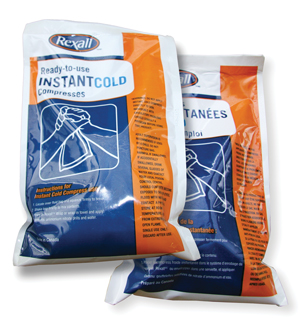

Module 4—Properties of Solutions
 Read
Read
Energy Changes and Dissolving Substances

Have you or someone you know ever sprained an ankle or wrist? Did it swell and change colour? It was probably wrapped in a stretchy bandage and iced. When a tissue injury occurs, such as a pulled muscle or a sprain, capillaries break and blood leaks into the surrounding tissue. This leakage causes swelling to occur and leads to significant pain.
If cold is applied to the injury immediately after it happens, the blood vessels constrict and release less fluid. This change can minimize the pain associated with the injury. The advantages of quickly reducing swelling to an injured area have made cold packs a required item in most sports trainers' kits.
An unused cold pack is normally at room temperature and feels like a plastic bag filled with water. However, when the cold pack is forcefully squeezed, an inner package breaks and the contents are allowed to mix. The cold pack becomes cold! By the end of this lesson, you will understand how a theoretical understanding of solution chemistry can explain this surprising result.
endothermic process: a change in matter that requires an input of energy to occur
exothermic process: a change in matter that releases energy when it occurs
Read the section “Energy Changes” on pages 199 and 200 in your textbook.
As you read in the section of your textbook, several steps are involved when a solid dissolves in water to form aqueous ions. The first two steps require energy to break bonds and are endothermic. An endothermic process absorbs energy from the surroundings, making the surroundings cooler. The final step releases energy as bonds form and is exothermic. An exothermic process is the opposite of an endothermic one, releasing energy into the surroundings and warming the surroundings.
The following steps essentially happen simultaneously but are separated for your understanding.
![A diagram shows alternating yellow and green spheres organized in three dimensions. The green spheres are labeled with a negative sign, and the yellow spheres are labeled with a plus sign. A water molecule represented by a single red sphere and two white spheres is beside one of the outer yellow spheres. Another water molecule is beside one of the outer green spheres. Red arrows point from each of the water molecules toward the yellow and green spheres. A label beside the arrow reads: Energy is required to break the ionic bonds holding the ions together.](../../images/m4/011_breaking_bonds.jpg)
Step 1: Breaking Bonds in the Solute (Endothermic)
The ions in the solid are held together with ionic bonds. These bonds must be broken before dissociation can occur. This step is endothermic because the energy required to break the bond comes from polar interactions with water molecules. (Think of the water molecule pulling the ion out from the solid.) As the water molecules use up their energy to break this bond, the solution cools.
![The diagram shows a single green sphere surrounded by many water molecules. At the other side of the diagram, a single yellow sphere is surrounded by water molecules. Attractive forces between particles are shown by dotted lines. Dotted lines are shown between one water molecule and the green sphere. Dotted lines are shown between one water molecule and the yellow sphere. Dotted lines are shown between the other water molecules in the diagram. The dotted lines between the water molecules are labeled with red arrows. The label on the arrows reads: Energy must be supplied to break hydrogen bonds between water molecules.](../../images/m4/012_breaking_bonds.jpg)
Step 2: Breaking Bonds in the Solvent (Endothermic)
The water molecules in the solution may be hydrogen bonded to other water molecules. These hydrogen bonds must be broken before the water molecules can be available for dissolving the ions from the solute. This step is also endothermic, and the surrounding water cools.
Step 3: Dissolving the Solute (Exothermic)
Now that the ions are in solution and sufficient water molecules are free, bonds form between the water molecules and the ions. This step is exothermic and releases energy, warming the surrounding water.
As you have just learned, the dissolving process involves both endothermic and exothermic processes. The overall energy of dissolving a solid can be determined using the following formula:
energy required to break bonds in solute
+ energy required to break intermolecular bonds in water
– energy released when bonds form between ions and water molecules
____________________________________________________________
= total change in energy
Based on this formula, if the energy required is more than the energy released, there is an energy deficit and the solution will cool down. If the energy required is less than the energy released, there is an energy surplus and the solution will warm up. In Chemistry 20 you will not be able to predict whether dissolving an ionic compound is an endothermic or exothermic process. The only way you can tell, for now, is by dissolving each substance in water and measuring the change in temperature. In Chemistry 30 you will learn how to use mathematics to predict the energy released.